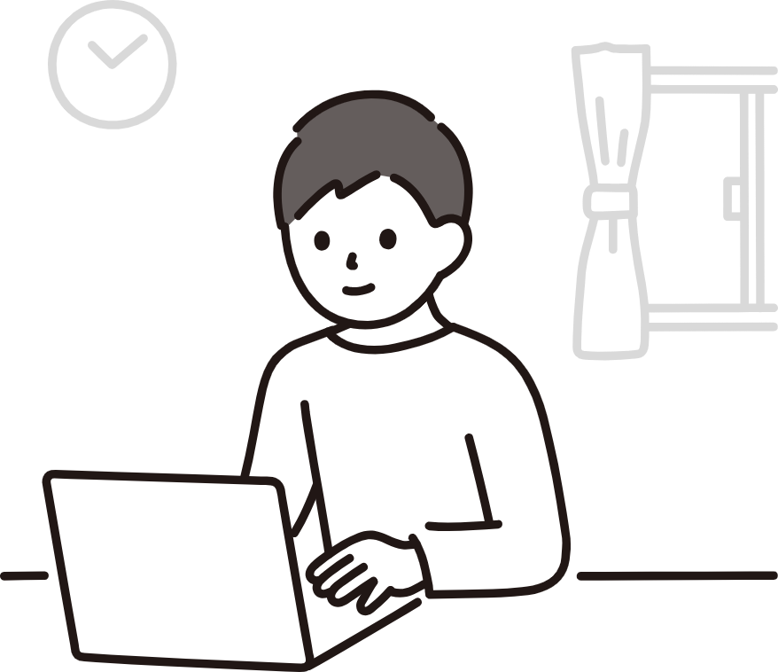

お問い合わせ
お問い合わせ
 救急外来
救急外来
夜21時まで診療
仕事帰りでも受診しやすい診療時間です。
寄り添い内科クリニックは、仕事や家事で忙しい毎日を送る方でも、安心して受診できる地域のかかりつけ医を目指しています。
「体調が悪いけれど病院へ行く時間がない」「仕事を休めない」 そんな悩みに寄り添えるよう、診療時間や予約システム、待ち時間の短縮など、通いやすさを大切にしています。


仕事帰りでも受診しやすい診療時間です。
24時間いつでもWEBから予約できます。
予約後に待ち時間を確認できるため、院内で長時間待つ必要がありません。
一般内科から生活習慣病まで、幅広く対応しています。
必要に応じて専門医療機関をご紹介し、継続した診療につなげます。
通勤途中や仕事帰りにも立ち寄りやすい立地です。
WEB予約ページから希望する診療日時を選択します。

予約完了メールに記載されたURLから、現在の待ち時間を確認できます。
待ち時間を確認し、ご自身の順番に合わせてご来院ください。
小さな体調の変化も、お気軽にご相談ください。